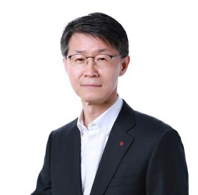

ChangHo OH joined LG Display (Goldstar at the time) in 1991 and worked on display product development with expertise in display panel design. In the process, he developed the panel for the 9.5 Notebook, LG's first mass produced product in 1995, and had since developed numerous monitors (the world's first 22.3UHD, etc.) and TVs (the world's firs t 55 inch, etc.) that applied IPS (In Plan Switch) Mode LCD technology, 100 inch TV product development was carried out.
In particular, by leading the development of Oxide TFT based large size OLED Display products since 2012, the company has developed a self luminous OLED display product that can achieve natural quality, and led the roll able display (The rolling display switches into different modes that blend seamlessly with the surroundings, refining the space in any place), Transparent Display, Thin A ctuator Sound OLED Display (Sound applied direct from the panel perfect alignments, amplifying the impression), and Wall Paper Display.
Currently, LG Japan Lab Inc., an integrated research institute of LG Group (LG Electronics, LG Display, LG Innotek, LG C hem , LG Energy Solution ) located in Yokohama Japan, is conducting research and development activities to prepare for the future of LG Group.